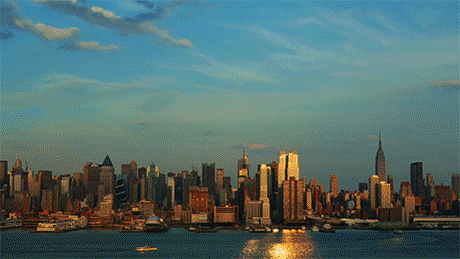

Conheça Nova York
Provavelmente Nova York está entre as cidades mais famosas se não for a mais famosa do mundo e com certeza uma das mais visitadas por milhares de pessoas.


Estátua da Liberdade
The Statue of Liberty
É uma escultura neoclássica colossal localizada na ilha da Liberdade no porto de Nova Iorque, nos Estados Unidos. A estátua de cobre, projetada pelo escultor francês Frédéric Auguste Bartholdi, que se baseou no Colosso de Rodes para edificá-la, foi construída por Gustave Eiffel e dedicada em 28 de outubro de 1886. Foi um presente dado aos Estados Unidos pelo povo da França.
Ponte do Brooklyn
Brooklyn Bridge
É uma ponte na cidade de Nova Iorque, considerada uma das mais antigas pontes de suspensão nos Estados Unidos, com extensão de 1 834 m. Situa-se sobre o rio East, ligando os distritos de Manhattan e Brooklyn. Ao ser finalizada era a maior ponte de suspensão do mundo, e a primeira a utilizar-se de cabos. Foi a primeira ponte de aço suspensa do mundo e suas imensas torres de suporte já foram as estruturas mais altas de toda a cidade de Nova Iorque.
Times Square
Times Square
É a denominação da área formada na confluência e cruzamento de duas grandes avenidas da cidade de Nova Iorque, Estados Unidos; podendo ser definida como uma grande praça ou largo, composta por vários cruzamentos e esquinas. A área está localizada na junção da Broadway com a Sétima Avenida, entre a 42nd Street e a 47th Street, na região central de Manhattan. É uma área comercial, onde todos os prédios são obrigados a instalar letreiros luminosos para propósitos de publicidade.
Aproveite essas férias para conhecer a cidade de New York!!
